心流空间 · 七页文字与流程轴预览
本页截图来自实际运行的生产构建。七张场景、按钮位置、输入和语音交互保留；指定文案、左上页码移除、七阶段流程轴与局部文字层级已实施。仍保持静态模式，没有开始第二阶段。
未完成：荆霄鹏行楷部署。
项目中没有该字体文件或可确认的网页嵌入授权。本轮保留项目已有字体并集中其配置，未下载或模拟目标字体。以下截图供审核文案、布局及流程轴，不能作为荆霄鹏行楷的最终字体验收。需要正版字体文件及适用于此网站的网页嵌入/自托管授权，随后再检查元数据、字符覆盖、加载及排版。
实际执行：构建、3 项状态测试、28 个页面/视口组合、顺序流程、已达章节回访与输入保留、短输入澄清、分享确认、词云选择、退出重置、三类语音模拟均通过。真实设备麦克风尚未测试。桌面七页已逐页检查；其他尺寸也提供实际截图供审核。
背景说明：七页已有无文字底图，桌面保留既有局部遮罩合成。原参考 PNG 中的字没有被 CSS 删除；新文字均为独立 HTML，镜面原字由既有去字底图替换显示。隐藏前景后七页背景与修改前 1920×1080 截图像素一致。原有局部去字纹理差异与手机场景裁切保留。
第七页保留原有演示数组及“演示词汇 · 非真实参与者留言”标记；指定正文原样显示。当前没有真实参与者共享数据库，本轮未编造回答。
| 尺寸 | 实际检查 | 结果 |
|---|---|---|
| 1920×1080 | 七页文案、流程轴、无左上页码、无横向溢出、静置一致 | 7 / 7 通过 |
| 1672×941 | 七页文案、流程轴、无左上页码、无横向溢出、静置一致 | 7 / 7 通过 |
| 1366×768 | 七页文案、流程轴、无左上页码、无横向溢出、静置一致 | 7 / 7 通过 |
| 390×844 | 七页文案、流程轴、无左上页码、无横向溢出、静置一致 | 7 / 7 通过 |
01 开始
查看笔记本 1366×768 截图
查看手机 390 宽截图
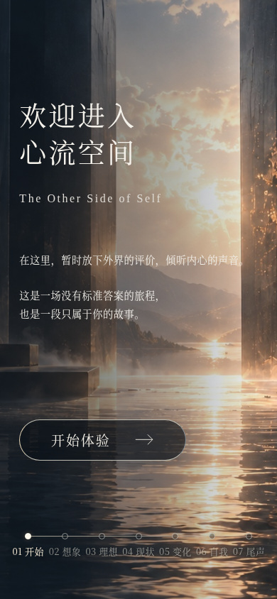
02 想象
查看笔记本 1366×768 截图
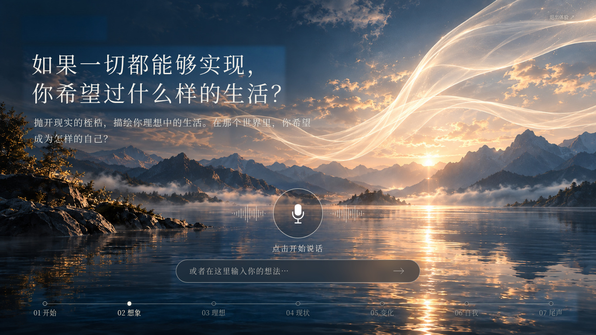
查看手机 390 宽截图
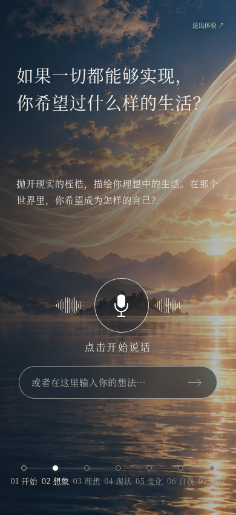
03 理想
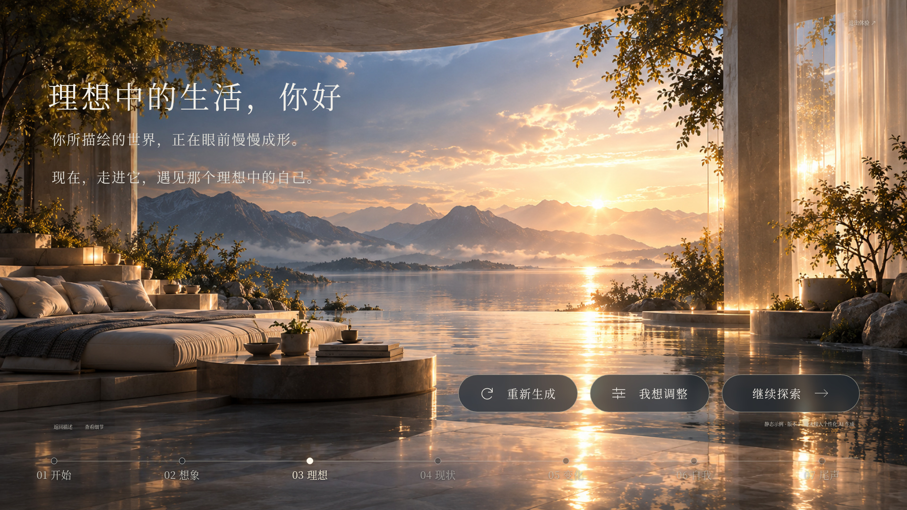
查看笔记本 1366×768 截图
查看手机 390 宽截图
04 现状
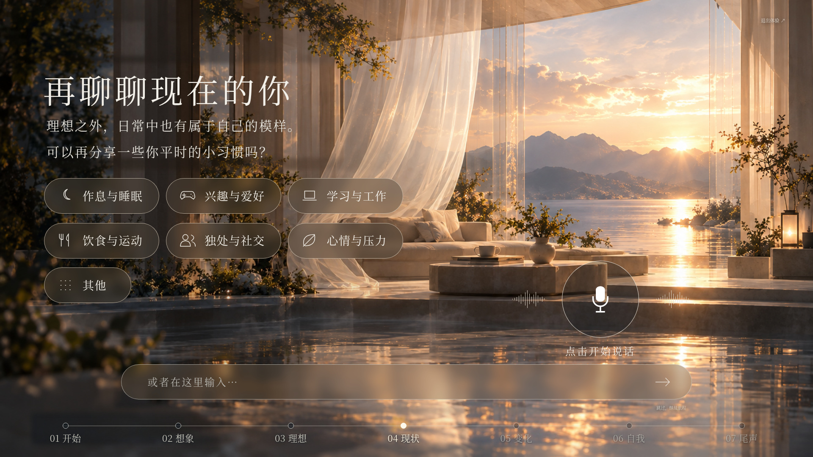
查看笔记本 1366×768 截图
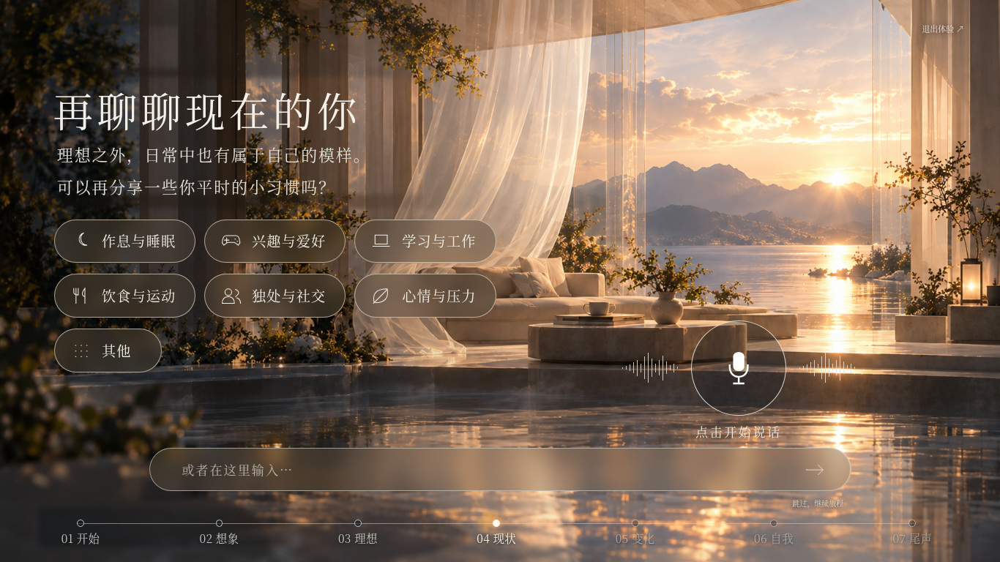
查看手机 390 宽截图
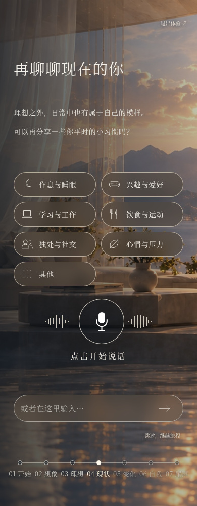
05 变化
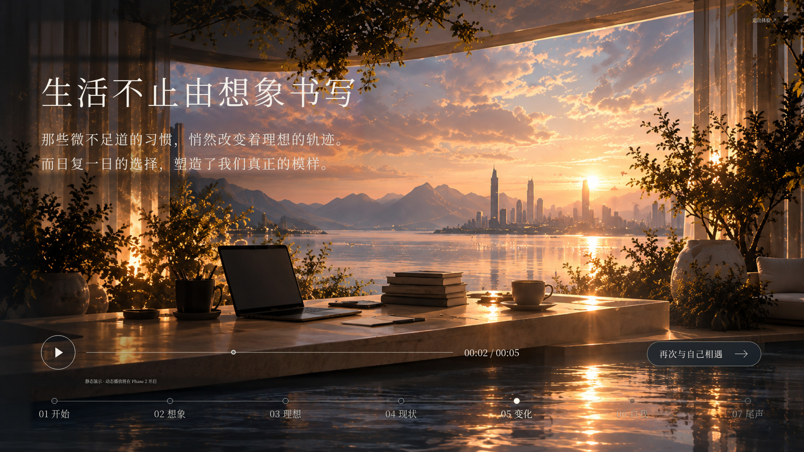
查看笔记本 1366×768 截图
查看手机 390 宽截图
06 自我
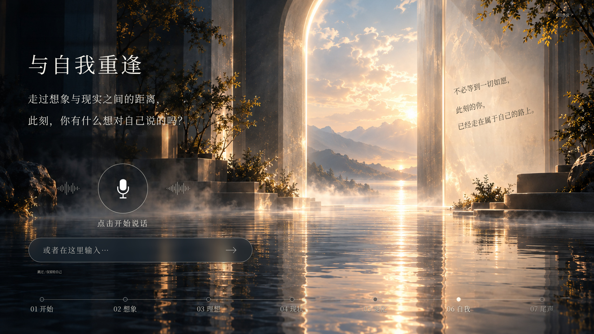
查看笔记本 1366×768 截图
查看手机 390 宽截图
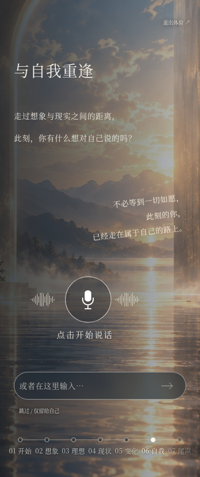
07 尾声
查看笔记本 1366×768 截图
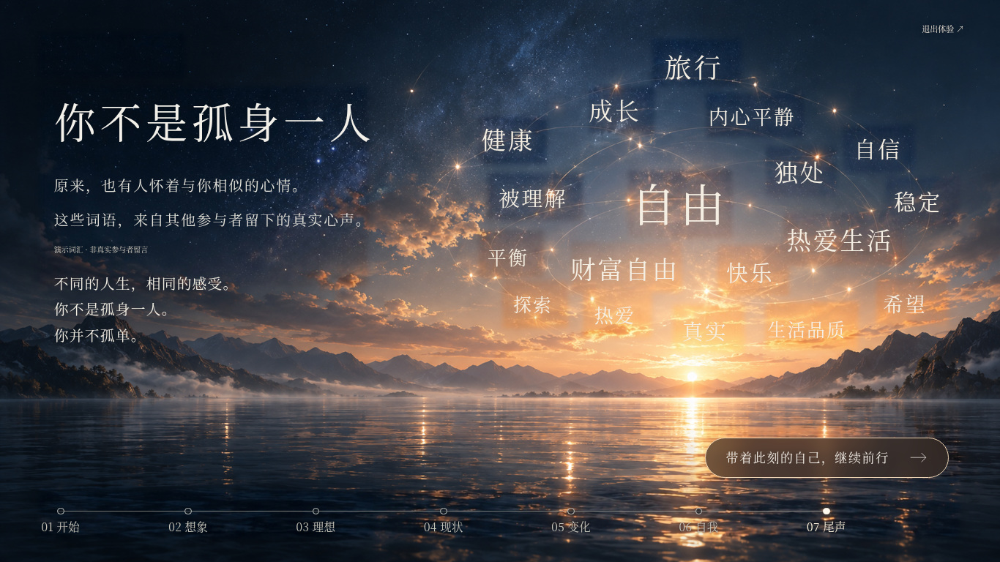
查看手机 390 宽截图
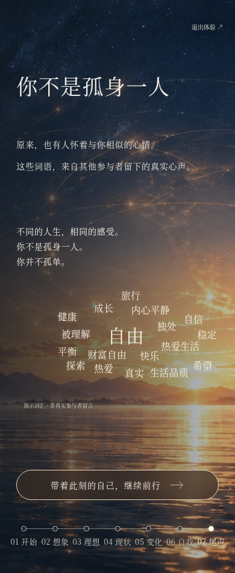